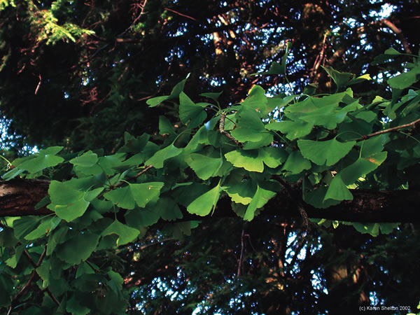

12 Essential Herbs
Follow this expert advice to use herbs safely and effectively.
By Michael Castleman
April/May 2006
Do you use herbal medicine? Whether or not you're aware of it, the answer is yes. "Ironically, even vocal critics use medicinal herbs all the time, usually without realizing it," says Mark Blumenthal, executive director of the American Botanical Council, a nonprofit herb education organization.
That's because many foods have medicinal properties, from ginger, which helps soothe upset stomachs, to garlic, which can help control cholesterol and reduce the risk of some cancers. It's also true that an estimated 25 percent of todays pharmaceutical drugs have plant origins. That includes aspirin, which originally came from white willow bark, and the cancer drug Taxol, which is derived from the Pacific yew tree.
Herbs are also the most popular form of alternative medicine in the United States, according to a recent Harvard study which found that 38 million Americans collectively spend $4.2 billion on herbal medicine every year. Understanding more about how medicinal herbs work can help people treat common ailments more effectively.
Herbs Hiding in Plain Sight
One reason we don't recognize many herbal medicines is that they're already so familiar to us. For example, coffee is an herbal medicine, a powerful stimulant thanks to the caffeine it contains. In addition to being America's favorite pick-me-up, coffee also opens your bronchial passages, according to botanist James Duke, author of The Green Pharmacy. Coffee can help treat the chest congestion of the common cold and asthma, Duke says. Recent studies show that coffee also may help prevent gallstones and Parkinson's disease, and that it boosts the pain-relieving power of ibuprofen.
Two other popular drinks, Coca-Cola and ginger ale, have medicinal uses both can calm upset stomachs. Coke, developed by Atlanta pharmacist John Pemberton in 1886, contains an extract of the tropical cola nut, which was widely used in the 19th century to improve digestion, reduce fatigue, strengthen the heart and even treat alcoholism. As for ginger ale, recent studies show that ginger helps prevent the nausea and vomiting of motion sickness.
"Ginger is the herb for nausea," says Linda White, a physician and co-author of Kids, Herbs and Health. "I use it and give it to my kids."
Then there are the herbs and spices in your kitchen. Before refrigeration, Blumenthal explains, they were mainstays of food preservation. Most culinary herbs and spices are useful not just for seasoning, but because they have antimicrobial properties that retard spoilage.
Using Herbs Safely
In the United States, herbal medicines are not regulated as strictly as pharmaceuticals because they are treated as foods, not drugs. Some critics contend that herb users are flying blind, but extensive research is available on many herbs. Two good sources for learning more about the latest research on herbal medicine are the American Botanical Council and the Memorial Sloan-Kettering Cancer Center.
It's also helpful to know that the number of adverse reactions attributed to herbs is relatively small. The American Association of Poison Control Centers publishes an annual review of the nations toxic exposures. In 2003 the most recent year for which complete figures are available acetaminophen (used in Tylenol and other painkillers) killed more than 100 Americans. For the same year, only seven deaths were blamed on the misuse of herbs. Although these deaths are tragic, it would be a mistake to suggest that medicinal herbs are a frequent cause of death.
Meanwhile, the U.S. Food and Drug Administrations strict regulation of drugs in no way guarantees their safety. University of Toronto researchers reviewed serious drug side effects among U.S. hospital patients from 1966 to 1996. The study did not look at overdoses or prescription errors, just at serious side effects from drugs taken as prescribed. The researchers estimated that more than 2 million hospital patients a year suffer serious side effects, and that more than 100,000 of them die.
"All medicines should be used cautiously, and that includes herbal medicines. Just because theyre natural doesnt mean they're safe," Blumenthal says. Some of the world's most potent poisons are herbal - for example, poison hemlock, which looks like parsley, and Amanita death cap mushrooms.
To use herbs safely, always take the following steps:
- Tell your doctor which herbs you take and why. Do not substitute an herbal medicine for a prescribed medication without consulting your physician.
- Pregnant women, children and those with chronic medical conditions should not take herbs or drugs without consulting a medical professional.
- Do not duplicate drug effects with herbs. If you take a pharmaceutical antidepressant, don't take an herbal antidepressant, too.
- Find out about any potential side effects before you begin taking the herbal medication. When using commercial preparations, follow the directions on the label.
- Some herbs should not be taken before surgery because they slow blood clotting. Stop taking anticoagulant herbs notably garlic, ginkgo, ginseng and white willow at least two weeks before surgery.
Herbs for Wellness
Some herbs are beneficial to almost everyone when taken regularly. They include the following:
Garlic for Cholesterol Control and Cancer Prevention. Researchers at Penn State University gave men with high cholesterol either garlic or a placebo. The herb lowered their total cholesterol by 7 percent, which reduced their risk of heart attack by 14 percent. The majority of garlic studies show that garlic reduces cholesterol and helps prevent heart disease.
Garlic also helps prevent several types of cancer. In the Iowa Womens Health Study, researchers followed 41,387 middle-aged women for five years. Those who ate the most garlic had the lowest risk of colon cancer. In general, fruit and vegetable consumption helps prevent cancer, but in this study, of all the plant foods analyzed, garlic yielded the greatest preventive benefit. Other studies show that garlic also helps prevent prostate, esophageal, stomach and bladder cancer.
Dosage: Most studies have used approximately the equivalent of one clove a day. Garlic works best when its raw or only slightly cooked. Garlic supplements are another option (deodorized brands are available); they have similar cholesterol-lowering effects. Follow label directions.
Cautions: Garlic impairs blood clotting. If you notice increased bruising, stop taking it and consult a doctor. Stop taking medicinal doses of garlic two weeks before any planned surgery.
Ginkgo for Mental Sharpness. Ginkgo increases blood circulation through the brain, and it is best known for its potential to slow the progression of Alzheimers disease. Ginkgo also enhances memory in healthy adults of all ages, according to several studies. In one, the greatest memory enhancement occurred in those taking 120 milligrams once a day.
Dosage: Ginkgo leaves contain only trace amounts of the medicinal compounds. Use commercial preparations, which concentrate these compounds. Look for standardized extracts that contain 24 percent flavonoid glycosides. Take 120 milligrams daily.
Cautions: Ginkgo has an anticoagulant effect, so stop taking it at least two weeks before any surgery or if you notice bruising. Otherwise, side effects are rare, though upset stomach, headache and allergic reactions are possible.
Tea for Heart Health and Cancer Prevention. For centuries, tea was just considered a mildly stimulating beverage, but no longer. Both black and green tea are high in antioxidants, which help prevent both heart disease and cancer. A five-year Dutch study of 3,454 older adults showed that compared with nondrinkers, those who drank two cups of tea each day had a 46 percent less risk of heart attack.
Drinking tea also reduces cholesterol and improves survival odds after a heart attack. University of California at Los Angeles researchers surveyed 1,100 Asian women, half of whom had breast cancer. They found that those who were cancer-free drank the most tea. Japanese researchers have discovered that as breast cancer survivors tea consumption increases, their risk of recurrence decreases. Tea also appears to protect against cancers of the colon, rectum, pancreas and esophagus.
Note: Both green tea and black tea come from the leaves of the same plant. Drying the leaves produces green tea. Fermenting them yields black tea. Both green and black tea help prevent heart disease and cancer, but for reasons that remain unclear, only green tea has been shown to reduce the risk of breast cancer.
Dosage: One to four cups a day, or as much as you can tolerate. A cup of tea has approximately half the caffeine of a cup of instant coffee, and one-third the caffeine of a cup of brewed coffee.
Cautions: Tea contains caffeine that may cause insomnia and irritability.
Herbs To Treat Common Complaints
Although herbal medicine is not the answer for every ailment, herbs can be used effectively to treat many health conditions, including those below.
Black Cohosh for Menopausal Discomforts. For 40 years, Europeans have used black cohosh to treat hot flashes. During the past decade, this herb has become popular in the United States. Several studies have questioned its benefit, but a clear majority have shown that black cohosh is effective. Its also safe for women who cant take hormones, such as those with a history of breast cancer.
Dosage: Products vary, so follow the label directions.
Cautions: Side effects are rare, but may include stomach distress. Black cohosh should not be used by pregnant women.
Cranberry for Urinary Tract Infection. Cranberry juice and the dried berries and extract prevent bacteria from sticking to the bladder wall long enough to cause infection. Many studies confirm cranberrys value in preventing urinary tract infection. Canadian researchers gave 150 women one of three treatments: cranberry juice (three cups per day), cranberry tablets (three per day) or a placebo. A year later, the women who took cranberry had experienced significantly fewer infections than the placebo group. Cranberry juice and dried cranberries are available at supermarkets. Capsules containing cranberry extract are available at health food stores and most pharmacies.
Dosage: If you use cranberry juice cocktail, drink at least three cups a day. If you use dried cranberries, munch on a handful or two a day. For commercial cranberry extract, be sure to follow the label directions.
Cautions: None.
Echinacea for Colds. The root and sometimes the aboveground portions of this daisylike flower have been shown to bolster the immune system and help the body fight colds. Some studies have shown no treatment benefit, but most show that echinacea minimizes cold symptoms and speeds recovery. The most comprehensive investigation of echinaceas cold-fighting effectiveness was a University of Wisconsin analysis of nine studies. Eight showed significant treatment benefit milder symptoms and briefer colds.
Dosage: Take the dosage recommended on the product label. Typical directions are to take it several times a day at first, and then taper off as you begin to feel better. Echinacea is available in teas, capsules and tinctures.
Cautions: A mildly upset stomach is possible with the tincture. Echinacea is safe for most people, but because it stimulates the immune system, it is not recommended for those with auto- immune diseases (rheumatoid arthritis, lupus and several others), or for transplanted-organ recipients. It should also be avoided by those allergic to closely related plants, such as chamomile and ragweed.
Ginger for Motion Sickness and Morning Sickness. Australian researchers gave 120 pregnant women either a placebo or capsules containing 11/2 grams of ginger powder. From the first day of treatment, the ginger group experienced significantly less nausea. Several studies show that the herb also wards off motion sickness. Danish researchers tested it on 80 naval cadets in heavy seas. Compared with those who took a placebo, the ginger group experienced 72 percent less seasickness. To keep motion sickness at bay, take a capsule containing 1,000 milligrams of powdered ginger root about an hour before you embark, and every two hours during your journey.
Dosage: Start with 1,000 milligrams. If that doesnt provide sufficient relief, try 1,500 milligrams. You can also brew ginger tea using 2 teaspoons of fresh grated root per cup of boiling water, or drink ginger ale just check the label to make sure it contains real ginger and not artificial flavoring.
Cautions: Some people report heartburn after taking ginger capsules.
Horse Chestnut Seed Extract for Varicose Veins. Because of genetics, aging or long periods of standing, the walls of leg veins can weaken. Blood pools in the calves and fluid leaks into surrounding tissue, causing unsightly varicose veins. Horse chestnut seed contains a compound (aescin) that strengthens vein walls, which decreases this fluid leakage. Several studies show that its an effective treatment for varicose veins. German researchers gave 240 people with varicose veins either compression stockings or horse chestnut (50 milligrams of aescin twice a day). After 12 weeks, both groups experienced equal relief.
Dosage: Studies showing benefits have used 50 milligrams of aescin once or twice a day.
Cautions: Horse chestnuts from the tree are toxic: Ingestion has killed children. Commercial extracts are detoxified and safe.
Milk Thistle for Liver Disease. Mainstream medicine doesnt have any miracle drugs for liver disease (hepatitis, cirrhosis), but milk thistle seeds can help. They contain three compounds collectively known as silymarin that have a remarkable ability to protect and heal the liver. Italian researchers have shown that milk thistle speeds recovery from hepatitis. Several studies have shown that the herb helps treat alcoholic cirrhosis. Milk thistle also helps prevent liver damage from powerful drugs. Most remarkably, this herb has been shown to treat Amanita mushroom poisoning better than mainstream medical treatments. Swiss researchers analyzed 452 cases of mushroom poisoning. Among those who received standard treatment, 18 percent died. But among those treated with silymarin, the death rate was only 10 percent.
Dosage: A typical recommended dosage is 140 milligrams of silymarin three times a day.
Cautions: Side effects are rare, but can include headache, stomach distress, nausea, hives, itching and joint pain.
St. Johns Wort for Depression. While some studies suggest otherwise, the vast majority show that St. Johns wort, in capsules or tablets, works as well as Prozac and Zoloft for relieving mild to moderate depression. Researchers in Montreal gave 87 depression sufferers either the herb (900 to 1,800 milligrams/day) or a standard dose of Zoloft (50 to 100 milligrams/day). After 12 weeks, both groups showed the same mood elevation based on standard psychological tests. However, the herb caused fewer side effects. Furthermore, a German study shows that the herb is as effective as Prozac but with fewer side effects. Twenty-three percent of those in the Prozac group experienced significant side effects, but in the herb group, only 8 percent reported serious side effects.
Dosage: Follow label directions. Studies showing benefits have used 600 to 1,800 milligrams/day. Most studies have used 900 milligrams/day.
Cautions: St. Johns wort can cause an upset stomach, increases sensitivity to sunlight and reduces the effectiveness of birth control pills. It also interacts with many other drugs, possibly reducing their effectiveness. If you take medication regularly, its important to consult your physician or pharmacist before using St. Johns wort.
Valerian for Insomnia. Valerians centuries-old reputation as a sleep aid has been validated by many studies. It often works as well as a pharmaceutical sleeping aid. German researchers gave 202 chronic insomniacs either valerian or a pharmaceutical sedative. After six weeks, both treatments were equally effective. But unlike many sleeping pills, valerian is not addictive.
Dosage: Follow label directions.
Cautions: Raw valerian root smells and tastes terrible. Use a commercial preparation. Some include other safe tranquilizing herbs such as hops or lemon balm.
Vitex (chaste tree berry) for PMS. Ripe seeds from Vitex angus castus, also called chaste tree, help balance levels of estrogen and progesterone, which minimizes the mood swings, breast tenderness and bloating of premenstrual syndrome. Many studies have found that chaste tree is effective. When 1,634 German PMS sufferers took the herb for three months, 93 percent reported relief from mood upsets. In tests that recorded two other popular PMS treatments vitamin B6 and Prozac chaste tree worked almost as well as the popular antidepressant and better than the vitamin.
Dosage: Available in pills, capsules and tincture. Follow label directions.
Cautions: Some women report stomach distress, headache and increased menstrual flow. Should not be used by pregnant women.
For more information about medicinal herbs, including free access to extensive reference information from the American Botanical Council, go to Herbs for Health.
San Francisco-based writer Michael Castleman is the author of 12 consumer medical guides, including The New Healing Herbs.
|
DAVID CAVAGNARO St. John’s Wort |
 WWW.ALTNATURE.COM/KAREN BERGERON Wild Ginger |
SCOTT VLAUN Garlic |
|
 WWW.ALTNATURE.COM/KAREN BERGERON Gingko |
RICHO CECH/HORIZON HERBS Tea |
WWW.ALTNATURE.COM/KAREN BERGERON Black Cohosh |
|
ISTOCK.COM Cranberries |
Echinacea |
Horse Chestnut |
|
|
|
|